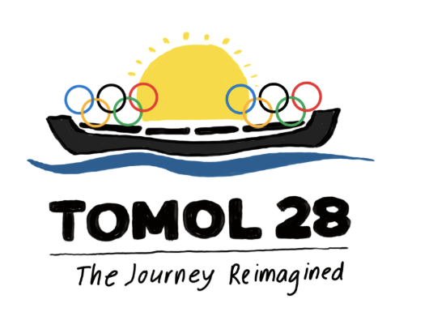
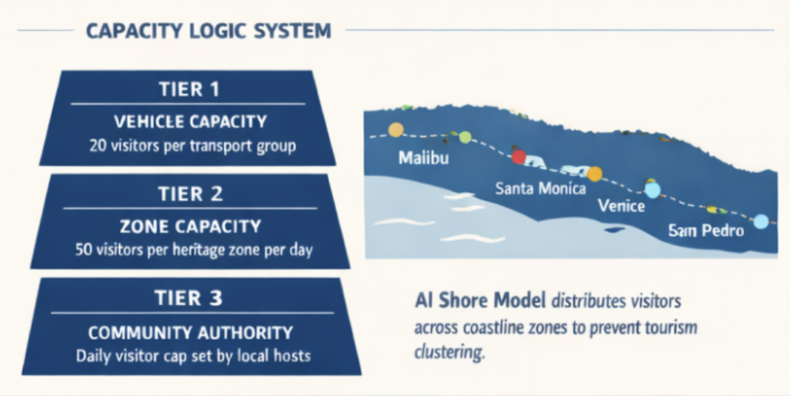

a personalised, ai-curated coastal heritage experience embedded in every la28 olympic ticket — community-hosted, capacity-limited, and free. designed with the communities, not for them.
the story
before the city, there was the tomol.
For thousands of years the Tongva navigated this coastline in tomol — hand-carved plank canoes sealed with tar from the same La Brea pits tourists visit today.
They paddled between the mainland and the Channel Islands, trading, fishing, sustaining a sophisticated network of coastal communities. Tomol 28 takes its name and its spirit from that tradition — and asks a simple question of the 2028 Games: what if visitors experienced LA's coast as history, not just scenery?
the ticket → shore journey
one tap, and the coastline opens up.
click each step to follow the journey
the methodology brief
three ways to build it. only one matched the tomol.
The brief was as much about process as concept. I weighed three design methodologies — each viable, each with a different cost.
"the tomol was never built by one person. it took shared knowledge, collective labour, and trust. participatory design works the same way."
the core achievement
scale and intimacy, at once.
Every Olympic ticket automatically unlocks a Tomol 28 experience, curated to the sport and venue. Beach volleyball at Santa Monica unlocks a Tongva coastal experience on that same ancestral shoreline; athletics at the Coliseum unlocks a migration-heritage story of the communities who built the city.
An AI shore model staggers groups of twenty across the coast so no single site is ever overwhelmed — resolving the usual trade-off between reaching everyone and protecting the place.

feasibility
built on infrastructure that already exists.
LA28's transport fleet sits idle between venue sessions. Tomol 28 repurposes those water taxis, air taxis, and electric shuttles at zero additional fleet cost. Community-set daily limits and locally chosen hosts — paid fair wages set by the communities — aren't hard to build once genuine relationships exist.
After 2028, the programme transfers to a community-governed trust funded by an Olympic surplus endowment. The hope: the experience outlasts the Games.
why it matters
An experience where a Tongva knowledge keeper stands on their ancestral coastline and chooses what story to share is categorically different from any installation or algorithm alone. The concept turns a design brief into a question of authorship — who gets to tell the story of a place.
"the tomol crossed these waters for thousands of years before the Games existed. it will be crossing them long after the flame goes out."